소음진동산업기사 (2005-05-29 기출문제)
1과목: 소음진동개론
1. 일시적 난청(소음성 일시적 역치 상승)을 나타내는 약자는?
- PNL
- TTS
- PTS
- PSIL
(정답률: 알수없음)

2. 정상적인 사람의 가청 음압의 범위로 알맞는 것은?
- 10μPa ∼ 30 Pa
- 20μPa ∼ 60 Pa
- 30μPa ∼ 120 Pa
- 40μPa ∼ 140 Pa
(정답률: 알수없음)
3. 70 dB와 80 dB인 두 소음이 합성되면 그 음압레벨은?
- 80.4 dB
- 81.3 dB
- 82.5 dB
- 83.5 dB
(정답률: 알수없음)
4. 50 phon는 몇 sone의 크기로 들리는가?
- 2 sone
- 3 sone
- 5 sone
- 6 sone
(정답률: 알수없음)
5. 음파의 회절현상에 관한 설명과 가장 거리가 먼 것은?
- 음파의 전파속도가 장소에 따라 변하고, 진행방향이 변화는 현상이다.
- 물체가 작을수록(구멍이 작을수록)소리는 잘 회절된다.
- 음파의 파장이 길수록 회절에 의한 물체뒤에 소리의 그늘이 잘 발생된다.
- 소리의 주파수는 파장에 반비례하므로 낮은 주파수는 고주파음에 비하여 회절하기가 쉽다.
(정답률: 알수없음)
6. 파동의 구분중 횡파에 관한 설명으로 틀린 것은?
- 파동 및 매질의 진동방향이 서로 수직이다.
- 소밀파라고도 한다.
- 매질이 없어도 전파된다.
- 전자기파, 지진파의 S파등을 말한다.
(정답률: 알수없음)
7. 귀(耳)의 기능에 관한 다음 기술중 틀린 것은?
- 내이의 난원창은 이소골의 진동을 와우각 중의 림프액에 전달하는 진동판이다.
- 음의 고저는 와우각내에서 자극받는 섬모의 위치에 따라 구별된다.
- 외이의 외이도는 일종의 공명기로 음을 증폭한다.
- 중이의 이관은 고막의 과도한 진동을 방지한다.
(정답률: 알수없음)
8. 길이가 약 70cm인 양단이 뚫린 관이 공명하는 기본음의 주파수는? (단, 15℃ 기준)
- 243Hz
- 343Hz
- 517Hz
- 681Hz
(정답률: 알수없음)
9. 15℃ 공기중에서 20Hz-20000Hz의 음을 파장범위로 표시 한 것중 가장 알맞는 것은?
- λ=17m ∼1.7㎝
- λ=34m ∼3.4㎝
- λ=51m ∼5.1㎝
- λ=68m ∼6.8㎝
(정답률: 알수없음)
10. 음압실효치 P, 소리의 세기(intensity) I, 고유음향 임피이던스 ρC 사이의 관계식으로 알맞는 것은? (단, ρ는 대기의 밀도, C는 음파의 속도)
- I=㎼p·C
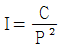
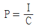
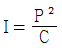
(정답률: 알수없음)
11. 인체에 가장 예민한 진동주파수 범위는?
- 2 - 8 Hz
- 10 - 20 Hz
- 20 - 80 Hz
- 80 - 120 Hz
(정답률: 알수없음)
12. 가진력을 F, 전달력은 Ft 라 하면 진동전달률은?
- Ft × F
- F/Ft
- Ft/F
- Ft /(Ft +F)
(정답률: 알수없음)
13. 기상조건이 흡음감쇠에 미치는 영향을 가장 알맞게 기술한 것은?
- 주파수는 커질수록, 기온이 높을수록, 습도가 높을수록 커진다.
- 주파수는 커질수록, 기온이 낮을수록, 습도가 낮을수록 커진다.
- 주파수는 커질수록, 기온이 낮을수록, 습도가 높을수록 커진다.
- 주파수는 커질수록, 기온이 높을수록, 습도가 낮을수록 커진다.
(정답률: 알수없음)
14. 옥타브밴드 중심 주파수 500-2000Hz 범위에서 청력손실이 몇 dB이상이면 난청이라 하는가?
- 15
- 20
- 25
- 30
(정답률: 알수없음)
15. 20℃ 대기중에 있는 강(鋼)에서 진동수 1000Hz, 파장 3.44m인 음파가 발생하고 있다면, 이 때의 음속은 대기 일 때 보다 약 몇배나 빠른가?
- 6배
- 8배
- 10배
- 12배
(정답률: 알수없음)
16. 인간의 귀는 순음이 아닌 소리를 들어도 각 주파수 성분으로 분해하여 들을 수 있는 능력을 갖고 있어 각 주파수 성분의 진폭이 서로 다른 음질로 듣게 된다. 이를 무슨 법칙이라 하는가?
- 옴 헬므홀쯔 법칙
- 웨버 훼히널 법칙
- 라우드리니 법칙
- 도플러 법칙
(정답률: 알수없음)
17. 측정된 음압의 실효치가 30[N/m2]인 정현파의 음압 레벨은?
- 114 dB
- 124 dB
- 134 dB
- 144 dB
(정답률: 알수없음)
18. 음압레벨을 계산하는 식으로 옳은 것은? (단, Po 는 기준음압, P 는 대상음압의 실효치이다.)
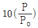
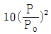
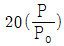
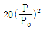
(정답률: 알수없음)
19. 0.2 Watt의 소리에너지를 발생시키고 있는 어떤 음원의 PWL은?
- 106dB
- 109dB
- 113dB
- 116dB
(정답률: 알수없음)
20. 음장의 종류중 원음장과 가장 거리가 먼 것은?
- 자유음장
- 잔향음장
- 확산음장
- 정현음장
(정답률: 알수없음)
2과목: 소음진동 공정시험 기준
21. 소음계의 성능기준으로 틀린 것은?
- 측정가능 주파수 범위는 31.5Hz - 8KHz 이상이어야 한다.
- 자동차 소음측정에 사용하는 경우 측정가능 소음도범위는 45 - 130 dB이상이어야 한다.
- 레벨렌지 변환기가 있는 기기에 있어서 레벨렌지 변환기의 전환오차는 0.5dB 이내이어야 한다.
- 지시계기의 눈금오차는 1.0dB이내이어야 한다.
(정답률: 알수없음)
22. 발파소음측정에 관한 설명으로 틀린 것은?
- 소음계 및 소음도기록기의 전원과 기기의 동작을 점검하고 매회 교정을 실시하여야 한다.
- 소음도기록기의 기록속도 등은 소음계의 동특성에 부응하게 조작한다.
- 소음계와 소음도기록기를 연결하여 측정, 기록하는 것을 원칙으로 한다.
- 소음계만으로 측정할 경우에는 최고소음도가 고정되지 않도록 한다.
(정답률: 알수없음)
23. 발파진동 측정을 위해 배경진동레벨 측정시 샘플주기의 결정기준으로 적절한 것은? (단, 디지탈 진동자동분석계를 사용할 경우)
- 0.1초 이내에서 결정
- 0.5초 이내에서 결정
- 1.0초 이내에서 결정
- 5.0초 이내에서 결정
(정답률: 알수없음)
24. 항공기 소음은 항공기의 비행상황, 풍향, 기후 등의 기상 조건을 고려하여 원칙적으로 연속 몇일 동안 측정하여야 하는가?
- 60일간
- 30일간
- 15일간
- 7일간
(정답률: 알수없음)
25. 다음 중 대상소음도에 관하여 옳게 설명한 것은?
- 측정소음도에 평가소음을 보정한 소음도이다.
- 평가소음도에 측정소음을 보정한 소음도이다.
- 측정소음도에 배경소음를 보정한 소음도이다.
- 배경소음도에 측정소음을 보정한 소음도이다.
(정답률: 알수없음)
26. 편도 2차선 자동차 전용 도로의 경우 도로단으로 부터 몇 m 이내의 지역을 도로변 지역이라 하는가? (단, 환경기준 측정 기준)
- 50 m
- 100 m
- 150 m
- 200 m
(정답률: 알수없음)
27. 생활소음규제기준의 측정방법중 측정시각 및 측정지점수로 알맞는 기준은?
- 적절한 측정시간에 2지점 이상의 측정지점수를 선정하여 그 중 가장 높은 소음도를 측정소음도로 한다.
- 적절한 측정시간에 2지점 이상의 측정지점수를 선정하여 산출평균한 소음도를 측정소음도로 한다.
- 적절한 측정시간에 3지점 이상의 측정지점수를 선정하여 그 중 가장 높은 소음도를 측정소음도로 한다.
- 적절한 측정시간에 3지점 이상의 측정지점수를 선정하여 산출평균한 소음도를 측정소음도로 한다.
(정답률: 알수없음)
28. 측정소음도가 배경소음도보다 몇 dB(A)이하로 크면 배경 소음이 대상소음보다 크다고 볼 수 있는가?
- 2 dB(A)
- 3 dB(A)
- 4 dB(A)
- 10 dB(A)
(정답률: 알수없음)
29. 철도소음 측정시 측정점에 장애물이나 주거, 학교, 병원, 상업 등에 활용되는 건물이 있을 때에는 건축물로 부터 철도방향으로 어느정도 떨어진 지점에서 측정하는가?
- 0.5m
- 1m
- 3.5m
- 5m
(정답률: 알수없음)
30. 다음은 소음계의 구조를 단순화시켜 나타낸 것이다. 각 부분의 이름이 틀린 것은?
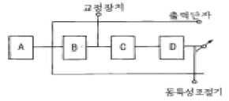
- A : 마이크로폰
- B : 레벨렌지변환기
- C : 증폭기
- D : 지시계기
(정답률: 알수없음)
31. 항공기 소음측정시 소음계의 청감보정회로로 맞는 것은?
- V특성
- A특성
- C특성
- D특성
(정답률: 알수없음)
32. 발파진동 평가시 시간대별 평균발파 횟수(N)에 따른 보정량으로 옳은 것은?
- 20log(N)2
- 10log(N)2
- 10logN
- 20logN
(정답률: 알수없음)
33. 소음계의 구조별 성능에 관한 설명으로 틀린 것은?
- 마이크로폰은 지향성이 작은 압력형으로 한다.
- 증폭기는 전기에너지를 음향에너지로 증폭시킨다.
- 마이크로폰은 기기의 본체와 분리가 가능하여야 한다.
- 출력단자는 소음신호를 기록기 등에 전송할 수 있는 교류단자를 갖춘 것이어야 한다.
(정답률: 알수없음)
34. 진동레벨계의 구성순서로 알맞은 것은?
- 진동픽업 - 증폭기 - 레벨렌지 변환기 – 감각보정회로 - 지시계기
- 진동픽업 - 감각보정회로 - 증폭기 - 레벨렌지 변환기 - 지시계기
- 진동픽업 - 증폭기 - 감각보정회로 - 레벨렌지 변환기 - 지시계기
- 진동픽업 - 레벨렌지 변환기 - 증폭기 – 감각보정회로 - 지시계기
(정답률: 알수없음)
35. 항공기 소음의 WECPNL 산출시 N4는 몇시부터 몇 시까지의 비행횟수를 나타내는가?
- 24시 ~ 06시
- 06시 ~ 19시
- 19시 ~ 22시
- 22시 ~ 24시
(정답률: 알수없음)
36. 항공기 소음측정에 관한 설명으로 알맞지 않는 것은?
- 소음계의 마이크로폰은 소음원 방향으로 하여야 한다
- 상시측정용 옥외마이크로폰은 풍속 5m/sec를 초과 할 때는 측정하여서는 안된다.
- 최고소음도는 매항공기 통과시마다 배경소음보다 높은 상황에서 측정하여야 한다.
- 소음계의 동특성은 느림(slow)을 사용하여 측정하여야 한다.
(정답률: 알수없음)
37. 다음은 소음의 배출허용기준의 측정점기준에 관한 설명이다. ( )안에 가장 알맞는 내용은?
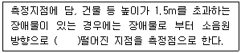
- 0.5 - 1.5m
- 1.5 - 5m
- 1 - 3.5m
- 5m 이상
(정답률: 알수없음)
38. 소음계의 레벨렌지 변환기는 몇 dB 간격으로 표시되어 있어야 하는가? (단, 유효눈금의 범위가 30dB 이하 이다.)
- 0.5 dB
- 1 dB
- 5 dB
- 10 dB
(정답률: 알수없음)
39. 압축기의 소음을 소음도 기록기로 측정한 결과 그림과 같은 자료를 얻었다. 등가소음도는?
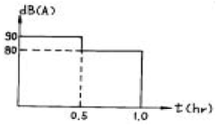
- 약 84 dB(A)
- 약 85 dB(A)
- 약 86 dB(A)
- 약 87 dB(A)
(정답률: 알수없음)
40. [ 직동픽업의 횡감도는 규정주파수에서 수감축 감도에 대한 차이가 ( )이상 이어야 한다. ] 진동레벨계의 성능에 관한 설명이다. ( )안에 알맞는 내용은?
- 5dB
- 10dB
- 15dB
- 20dB
(정답률: 알수없음)
3과목: 소음진동방지기술
41. 실용적 V=2000m3, 표면적 S=800m2인 공장내에서 500Hz의 잔향시간을 측정해 보니 1.6초였다. 평균 흡음율은?
- 0.09
- 0.13
- 0.25
- 0.37
(정답률: 알수없음)
42. 1KHz 옥타브 밴드에서 80dB의 음향파워 레벨을 갖는 무지 향성 음원이 실정수 20m2인 잔향실내에서 가동중일 때의 음압레벨은?
- 73dB
- 78dB
- 82dB
- 87dB
(정답률: 알수없음)
43. 날개수 4개의 송풍기가 1500rpm으로 운전되고 있다면 이 때 기본음 주파수(HZ)는?
- 50HZ
- 100HZ
- 150HZ
- 200HZ
(정답률: 알수없음)
44. 다음 방진대책중 발생원대책과 거리가 먼 것은?
- 가진력 감쇠
- 불평형력의 평형
- 방진구
- 탄성지지
(정답률: 알수없음)
45. 그림과 같이 스프링, 질량계로 구성된 진동계에서 질량 m = 1200kg, 스프링상수 k = 300kg/cm, 초기변위 xO = 2cm, 초기속도 VO = 5cm/sec일 때 진폭의 크기는?
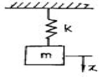
- 3.6cm
- 5.1cm
- 7.4cm
- 10.2cm
(정답률: 알수없음)
46. 동적배율에 관한 설명으로 틀린 것은?
- 동적배율은 방진고무의 영율이 커지면 큰 값이 된다.
- [정적스프링정수/동적스프링정수]로 나타낸다.
- 동적배율은 천연고무류에서 일반적으로 1.2 정도이다.
- 금속 코일 스프링의 동적배율은 1.0 정도이다.
(정답률: 알수없음)
47. 감쇠가 없는 강제진동에서 전달율을 0.2로 하려고 한다. 진동수비 W/Wn의 값은?
- 3.32
- 3.13
- 2.78
- 2.44
(정답률: 알수없음)
48. 방음벽 높이에 비하여 벽의 길이가 몇 배 이상되어야 적절한가? (단, 점음원인 경우)
- 2배
- 5배
- 10배
- 15배
(정답률: 알수없음)
49. 일중벽에 난입사하는 음파의 주파수가 2,000Hz이고, 이 벽의 면밀도가 2kg/m2 이라 하면 투과손실은? (단, 실용적으로 사용되는 식을 적용함)
- 약 14 dB
- 약 21 dB
- 약 24 dB
- 약 28 dB
(정답률: 알수없음)
50. 방진재중 공기스프링의 단점이라 볼 수 없는 것은?
- 구조가 복잡하고 시설비가 많다.
- 부하능력범위가 비교적 좁다.
- 공기누출의 위험이 있다.
- 압축기등 부대시설이 필요하다.
(정답률: 알수없음)
51. 전달력은 항상 외력보다 작기 때문에 차진이 유효한 영역 을 나타내는 진동수비(f/fn)는?
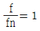
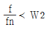
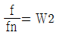
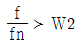
(정답률: 알수없음)
52. 특성 임피던스가 40×106kg/m2s인 금속배관의 플랜지 접속부에 특성 임피던스가 3×104kg/m2s인 고무 패킹을 끼웠을 때 이 패킹에 의한 진동감쇠량은 대략 몇dB인가?
- 15 dB
- 20 dB
- 25 dB
- 30 dB
(정답률: 알수없음)
53. x1 = cos60t, x2 = cos59t인 2개의 진동이 동시에 일어날 때 맥놀이 진동수는? (단, 단순 조화진동)
- 0.16 Hz
- 0.32 Hz
- 0.48 Hz
- 0.64 Hz
(정답률: 알수없음)
54. 다공질형 흡음재에 관한 설명으로 알맞지 않은 것은?
- 중,고음역에서 흡음성이 좋다.
- 시공시에는 벽면으로부터 배후공기층을 두고 설치하면 저음역의 흡음율도 개선된다.
- 흡음재를 벽에 바로 부착시킬 때 두께가 최소한 입사음 파장의 1/2이상이 되어야 한다.
- 섬유, 발포재료 등의 내부의 기공이 상호 연속되는 석면, 암면등을 말한다.
(정답률: 알수없음)
55. 길이 ℓ인 가벼운 봉의 끝에 질량 m인 물체를 매달았을때 이 단진자의 고유진동수는?
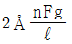
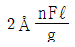
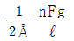
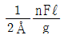
(정답률: 알수없음)
56. 헬름홀쯔 공명기의 목의 유효 길이를 ℓ, 단면적을 A, 공동체적을 V라고 할 때 공명 주파수의 올바른 표현식은? (단, C : 소음기내 음속 m/sec)
- (C/2Å)㎼A/ℓV
- (C/2Å)㎼ℓV/A
- (C/2Å)㎼Aℓ/V
- (C/2Å)㎼V/Aℓ
(정답률: 알수없음)
57. 일반적으로 진동이 일어나는 기계를 방진하기 위해서 사용되는 금속스프링의 장점이 아닌 것은?
- 온도,부식과 같은 환경요소에 대한 저항성이 크다.
- 공진시 전달율이 매우 작다.
- 최대 변위가 허용된다.
- 저주파 차진에 좋다.
(정답률: 알수없음)
58. 정재파 관내법을 사용하여 시료의 흡음성능을 측정하였더니 1000Hz 순음인 sine파의 정재파비가 3.0 이었다면 이 흡음재의 흡음률은?
- 약 0.90
- 약 0.85
- 약 0.80
- 약 0.75
(정답률: 알수없음)
59. 투과손실이 50dB인 벽에 벽전체 면적의 2%에 해당하는 공기구멍을 뚫었다. 이 벽의 전체 투과 손실은 얼마가 되겠는가?
- 23dB
- 20dB
- 17dB
- 14dB
(정답률: 알수없음)
60. 회전수가 1,800rpm인 원심휀이 있다. 진동전달률을 5%로 할 때 스프링계의 고유진동수는?
- 6.5Hz
- 8.5Hz
- 10.5Hz
- 12.5Hz
(정답률: 알수없음)
4과목: 소음진동방지기술
61. 공장소음·진동배출허용기준에서 대상소음도에서 보정표에 의하여 보정한 평가소음도가 50dB(A) 이하이어야 한다. 다음 중 충격음 성분이 있을 경우 보정치로 맞는 것은?
- +5
- 0
- -5
- -10
(정답률: 알수없음)
62. 사업자는 배출시설 또는 방지시설의 설치 또는 변경을 완료하여 환경부령이 정하는 바에 의하여 가동개시의 신고를 누구에게 하여야 하는가?
- 환경부장관
- 지방환경청장
- 시, 도지사
- 유역환경청장
(정답률: 알수없음)
63. 이동소음원의 종류와 가장 거리가 먼 것은?
- 소음방지장치가 비정상적인 이륜자동차
- 음향장치를 부착하여 운행하는 이륜자동차
- 행락객이 사용하는 음향기계 및 기구
- 이동가능 물체에 부착하여 영업하기 위해 사용하는 음향기계
(정답률: 알수없음)
64. 옥외의 설치된 확성기의 낮(08:00 - 18:00) 동안의 생활 소음 규제기준은? (단, 대상지역은 주거지역)
- 90dB(A)이하
- 80dB(A)이하
- 70dB(A)이하
- 60dB(A)이하
(정답률: 알수없음)
65. 특정공사를 시행하고자 하는 자가 당해 공사 시행전 특정 공사사전신고서에 첨부하여 제출하여야 하는 서류가 아닌 것은?
- 특정공사의 개요
- 소음, 진동배출시설 설치내역 및 도면
- 공사장 위치도
- 방음, 방진시설의 설치내역 및 도면
(정답률: 알수없음)
66. 도로 교통진동의 한도기준으로 알맞는 것은? (단, 주간, 주거지역의 부지경계선으로부터 50m 이내지역)
- 63dB(V)
- 65dB(V)
- 68dB(V)
- 70dB(V)
(정답률: 알수없음)
67. 사업자는 배출시설과 방지시설의 정상적인 운영, 관리를 위하여 환경기술인을 임명, 개임한 때의 신고 기간은?
- 임명신고는 가동개시신고와 동시에 개임신고는 개임 즉시 하여야 함
- 임명신고는 가동개시신고와 동시에 개임신고는 개임한 날부터 10일 이내에 하여야 함
- 임명신고는 가동개시신고와 동시에 개임신고는 개임한 날부터 30일 이내에 하여야 함
- 임명신고는 가동개시신고 후 5일 이내에 개임신고는 개임한 날부터 15일 이내에 하여야 함
(정답률: 알수없음)
68. 1년이하의 징역이나 500만원 이하의 벌금 처분에 해당되는 자와 가장 거리가 먼 것은?
- 변경인증을 받지 아니하고 자동차를 제작한 자
- 조업정지명령을 위반 한 자
- 신고를 하지 아니하고 배출시설을 설치한 자
- 가동개시신고를 하지 않고 조업한 자
(정답률: 알수없음)
69. 자동차제작자의 검사·인증시험 장비로서 맞지 않는 것은?
- 보통소음계 및 그 부속기기 1조
- 차속측정장치 및 그 부속기기 1조
- 회전속도계 1대
- 아스팔트 주행시험로 1조
(정답률: 알수없음)
70. 공항주변 인근지역의 항공기소음의 한도는? (단, 항공기소음영향도(WECPNL)를 기준으로 한다.)
- 70
- 80
- 90
- 100
(정답률: 알수없음)
71. 소음배출시설인 마력기준시설 및 기계, 기구 중에서 '10마력 이상'의 기준으로 정해진 시설이 아닌 것은?
- 압축기
- 변속기
- 송풍기
- 단조기
(정답률: 알수없음)
72. 주거지역 주간 철도 교통소음의 한도는?
- 65LeqdB(A)
- 70LeqdB(A)
- 75LeqdB(A)
- 78LeqdB(A)
(정답률: 알수없음)
73. 용어의 정의중 알맞지 않은 것은?
- 소음: 기계, 기구, 시설 기타 물체의 사용으로 인하여 발생하는 강한 소리
- 진동: 기계, 기구, 시설 기타 물체의 사용으로 인하여 발생하는 강한 흔들림
- 교통기관: 기차, 자동차, 전차, 도로 및 철도 등을 말함. 다만 항공기 및 선박은 제외함
- 방음시설: 소음, 진동배출시설에서 발생하는 소음을 제거하거나 감소시키는 시설로서 환경부령으로 정함
(정답률: 알수없음)
74. 소음·진동 측정망 설치 계획의 고시는 측정소를 설치하게 되는 날의 몇 월 이전에 해야 하는가?
- 1월
- 2월
- 3월
- 4월
(정답률: 알수없음)
75. 공장의 대상소음도에서 보정을 가장 많이 하여주는 지역은?
- 녹지지역
- 일반주거지역
- 농림지역
- 준주거지역
(정답률: 알수없음)
76. 소음진동방지시설중 방음시설과 가장 거리가 먼 것은?
- 방음내피시설
- 방음림
- 방음언덕
- 방음실시설
(정답률: 알수없음)
77. 인증을 면제할 수 있는 자동차와 가장 거리가 먼 것은?
- 여행자등이 다시 반출할 것을 조건으로 일시 반입하는 자동차
- 주한 외국군대의 구성원이 공용의 목적으로 사용하기 위해 반입하는 자동차
- 국제협약등에 의하여 인증을 면제할 수 있는 자동차
- 자동차제작자, 연구기관등이 자동차의 개발 또는 전시등의 목적으로 사용하는 자동차
(정답률: 알수없음)
78. 환경기술인의 업무를 방해하거나 환경기술인의 요청을 정당한 사유없이 거부한 자에 대한 벌칙기준으로 적절한 것은?
- 6월이하의 징역 또는 200만원이하의 벌금
- 100만원이하의 벌금
- 50만원이하의 벌금
- 50만원이하의 과태료
(정답률: 알수없음)
79. 자동차의 사용정지 명령차량은 사용정지 명령서를 교부받아 차량의 어느 부위에 부착해야 하는가?
- 전면 유리창 우측 상단
- 전면 유리창 좌측 상단
- 전면 유리창 우측 하단
- 전면 유리창 좌측 하단
(정답률: 알수없음)
80. [배출시설규모의 ( )을 변경(배출시설 설치의 신고 또는 변경신고를 하거나 허가를 받은 후 변경하는 누계를 말한다)하는 경우에는 가동개시의 신고제외 대상이 된다.] ( )안에 알맞는 내용은?
- 100분의 30미만
- 100분의 40미만
- 100분의 50미만
- 100분의 70미만
(정답률: 알수없음)